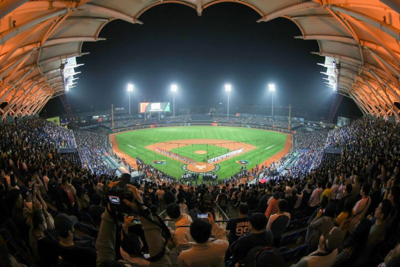
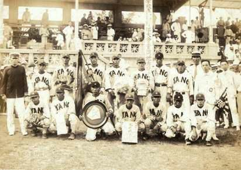
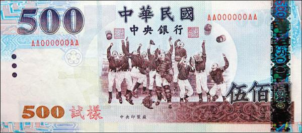

Why Is Baseball So Popular In Taiwan?
Historical Influence
Baseball was introduced to Taiwan during the Japanese colonial period (1895-1945)(Japanese rule) and quickly became popular among the locals. The sport was promoted in schools and became deeply ingrained in Taiwanese society.
In 1931, The Kano baseball team won second place in the 17th Japanese High School Baseball Championship, which shocked the whole of Japan.
|  |
| Kano Baseball Team |
The amazing success of a team from a colonized land making to the finals was totally unexpected, and it ultimately earned the Taiwanese baseball players greater respect from their Japanese counterparts. The Kano experience also encouraged more people in Taiwan to play baseball, eventually making it the "national sport" in Taiwan.
Ater World War II in 1945, baseball remained popular in Taiwan.
In 1968, Red Leaves from the remote mountainous area in Taitung County defeated the visiting all-star little-league team from Japan, touching off a "little-league baseball craze" in Taiwan. The following year, Golden Dragon little-league baseball team, an all-star team, participated in Little League World Series for the first time and won the championship, which launched the "golden age" of Taiwan's "three youth level baseball" program comprising the little league, senior league, and big league.
|  |
| A sample of 500 New Taiwan Dollar Note. Featuring baseall players. |
Did you know?
In 1971, after Taiwan's withdrawal from the United Nations, the “Tri-Champions” became an object of national pursuit; this reflected the patriotism of the age. People would crawl from their beds in the wee hours of the day to watch the young players fight for glory with their bats and gloves. When teams from Taiwan won, the streets of Taiwan would be filled with a frenzy of celebrations, and the young athletes would be treated as national heroes on their return.
Success in International Competitions
With regard to little league baseball, Taiwan has won 15 championships from 1969 to 1991. For senior league baseball, Taiwan joined in Senior League World Series held by Little League Baseball at Gary, Indiana in 1972, and won the championship in that inaugural effort. Within 20 years, Taiwan has won 17 championships as of 1991. For big league baseball, Taiwan began entering the Big League World Series held by Little League Baseball at Fort Lauderdale, Florida in 1974, and won 13 championships within 18 years (until 1991).
Role Models
Taiwan has produced many talented baseball players who have achieved success both domestically and internationally. These players serve as role models for aspiring young athletes and help maintain the popularity of the sport.